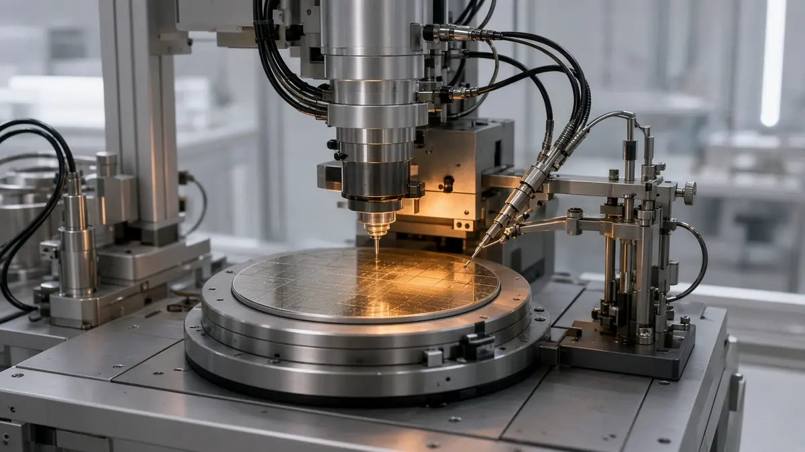

IQM says Emerald entangled all 54 qubits, with a GHZ fidelity of 0.516
Short answer: IQM Quantum Computers said on 29 October 2026 that its cloud-accessible Emerald processor had entangled all 54 qubits on the chip at the same time. IQM measured a Greenberger-Horne-Zeilinger fidelity of 0.516 for the full chip when readout-error mitigation was applied, and 0.515 for a 40-qubit version of the same test without that mitigation. The company says both numbers sit above 0.500, the line it uses to separate genuine multipartite entanglement from noise.
The state was prepared across the whole Emerald chip, IQM says, by an automated routine that picks two-qubit gates and the order they run in, weighing gate quality against how long other qubits sit idle. Craig Ciesla, IQM's chief technology officer, said the result "came down to being smarter about how we prepare the state".

IQM says the demonstration follows about a year of hardware and calibration work: a revised calibration method, an updated gate set, and continued use of dynamical decoupling and qubit selection. The company says those changes cut the error rate of quantum operations in the processor by up to 50 percent. It also says that, before this run, a comparable demonstration on Emerald could reliably use on the order of 30 qubits inside a single algorithm, and that cloud customers can now call on that same full-chip performance.
The announcement was issued through Business Wire at 3:00 a.m. US Eastern time and datelined Espoo, Finland. IQM describes itself as a superconducting quantum-computing company founded in 2018 and listed on Nasdaq under the symbol IQMX.
IQM says the preparation routine is part of a wider effort to automate how its machines are operated and tuned, including calibration work the company describes as AI-driven.